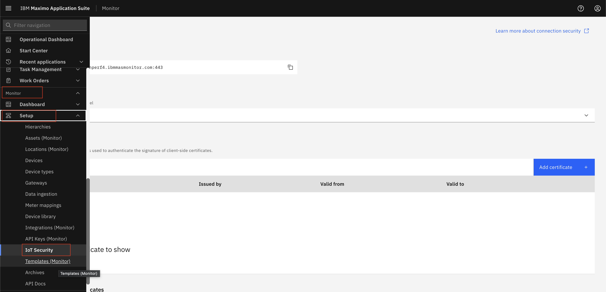
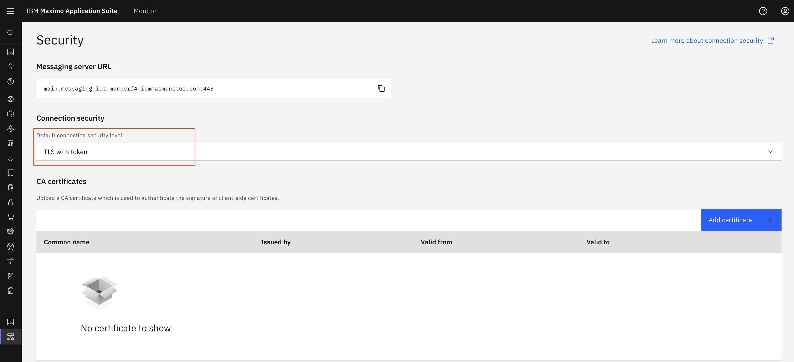
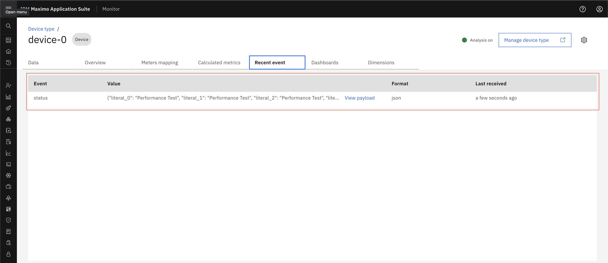
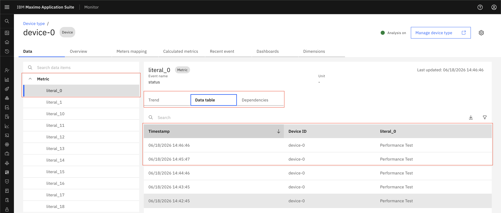

TLS With Token
Prerequisites
Before starting this exercise, ensure you have:
- Access to Maximo Monitor
Important Notes
Warning
- When you want to send data to device using username and password, you must use TLS with Token connection security level.
- TLS with Token is a default option for security level.
Configure Connection Security Level
- Navigate to Setup > IoT Security

- By Default TLS with Token selected as Connection security level

- Click on Save button
- Follow create a DeviceType (Steps to create DeviceType) and devices (Steps to create Device)
- New device has username and password(token) generated. Keep those username and password for future use.
- Add metric and event on device type (Steps to add metric)
- Now you can use Swagger UI (Selecy
API Docs Menuand selectHTTP Messaging APIclick onView APIs) or any messaging tool like MQTTX to test device authentication using username and password. - Provide parameters in swagger document or add topic in MQTTX for device and send data.
- Once you send data, data should be shown in device recent event and data table.
Device Recent

Device Data Table
Next Steps
After configuring TLS with token authentication, you may want to:
- Configure TLS with Client Certificate or Token for enhanced security
- Configure TLS with Client Certificate and Token for maximum security
Related Topics: - Generate API Key - Edit API Key - Delete API Key